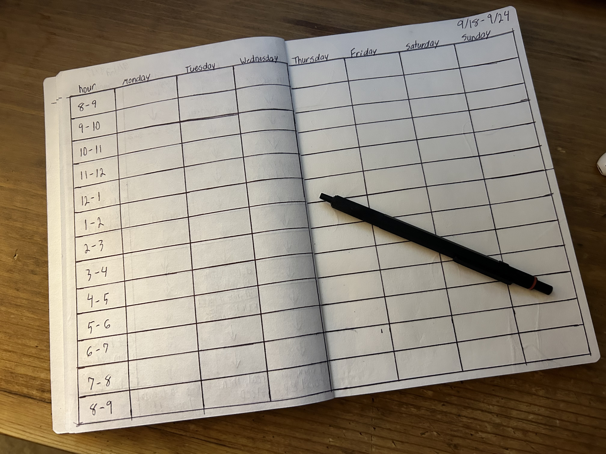

Cal Newport is one of my favorite authors. I first heard of his work from a “study” YouTuber named James Scholz. Scholz mentioned the book Digital Minimalism in his early video essays and named it as one of the main factors in the lifestyle he lives. The idea of only using only the tech that is needed to complete daily work without ANY distractions intrigued me, so I decided to read the novel for myself. During this time, I was completing my first semester at Morehead State University. I did not have a set schedule as to when it was time to work on assignments, read the latest chapter, take notes, etc. I simply worked whenever I felt that it was time to work. This open schedule, concentrated work strategy drastically improved my productivity by cutting out digital distractions and setting limitations on leisure time throughout the day.
However, a lot of time was still being wasted due to not having dedicated work hours. This would eventually lead me to read Deep Work by Cal Newport. In this book, Cal expressed that it’s not the amount of time you work that matters, but how DEEP you work in a specified amount of time. The equation goes like this: High-Quality Work Produced = Time Spent x Intensity of Focus. I realized at this point that I had the intensity of work, but I did not have the time spent variable specified. One of the strategies to help build this principle that Cal mentions is the time block schedule. As of recently, I have incorporated this strategy into my daily life. It is as simple as this:
Every Sunday, turn the page in a dedicated notebook and draw out an 8x12 grid. Depending on how many hours per day you want to schedule, you can change the height amount. Each block within this grid represents an hour. The first column will be titled the hours column. The other 7 will represent the week (Monday-Sunday). Take as much time as needed to plan out each day. If you’re employed, write your shifts down each day you work. If you want to read a book for 30 minutes every day, allocated half a block whenever you feel like is appropriate throughout the day. If you complete a task earlier than expected, allocate the remaining time to a separate task. Modify the schedule where you see fit. If something comes up in the middle of the week that requires a couple blocks, change the schedule. This does not have to be a set-in-stone schedule.
Instead of freely going about your daily life, you’ll soon start to realize how much more productive you can be once you abide by the schedule that YOU create for yourself. Below is the first schedule that I made, it’s not the prettiest, however it has made everyday tasks much easier to complete.
